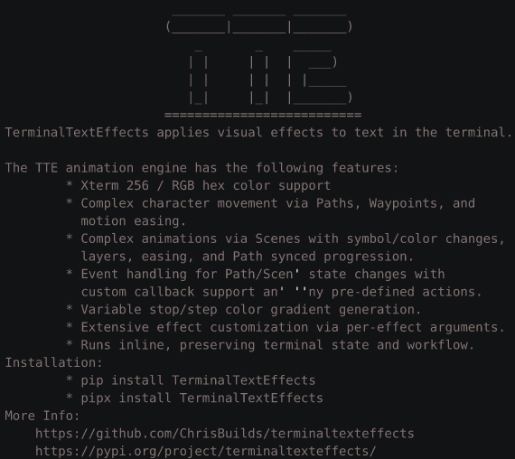

Effects Showroom
The effects shown below represent the built-in library of effects and their default configuration.
Beams
Creates beams which travel over the output area illuminating the characters.
Beams Command Line Arguments
--beam-row-symbols (ASCII/UTF-8 character) [(ASCII/UTF-8 character) ...]
Symbols to use for the beam effect when moving along a row. Strings will be used in sequence to create an animation. (default: ('▂', '▁', '_'))
--beam-column-symbols (ASCII/UTF-8 character) [(ASCII/UTF-8 character) ...]
Symbols to use for the beam effect when moving along a column. Strings will be used in sequence to create an animation. (default: ('▌', '▍', '▎', '▏'))
--beam-delay (int > 0)
Number of frames to wait before adding the next group of beams. Beams are added in groups of size random(1, 5). (default: 10)
--beam-row-speed-range (hyphen separated int range e.g. '1-10')
Minimum speed of the beam when moving along a row. (default: (10, 40))
--beam-column-speed-range (hyphen separated int range e.g. '1-10')
Minimum speed of the beam when moving along a column. (default: (6, 10))
--beam-gradient-stops (XTerm [0-255] OR RGB Hex [000000-ffffff]) [(XTerm [0-255] OR RGB Hex [000000-ffffff]) ...]
Space separated, unquoted, list of colors for the beam, a gradient will be created between the colors. (default: ('ffffff', '00D1FF', '8A008A'))
--beam-gradient-steps (int > 0) [(int > 0) ...]
Space separated, unquoted, numbers for the of gradient steps to use. More steps will create a smoother and longer gradient animation. Steps are paired with the colors in final-gradient-
stops. (default: (2, 8))
--beam-gradient-frames (int > 0)
Number of frames to display each gradient step. (default: 2)
--final-gradient-stops (XTerm [0-255] OR RGB Hex [000000-ffffff]) [(XTerm [0-255] OR RGB Hex [000000-ffffff]) ...]
Space separated, unquoted, list of colors for the wipe gradient. (default: ('8A008A', '00D1FF', 'ffffff'))
--final-gradient-steps (int > 0) [(int > 0) ...]
Space separated, unquoted, numbers for the of gradient steps to use. More steps will create a smoother and longer gradient animation. Steps are paired with the colors in final-gradient-
stops. (default: (12,))
--final-gradient-frames (int > 0)
Number of frames to display each gradient step. (default: 5)
--final-gradient-direction (diagonal, horizontal, vertical, center)
Direction of the final gradient. (default: Direction.VERTICAL)
--final-wipe-speed (int > 0)
Speed of the final wipe as measured in diagonal groups activated per frame. (default: 1)
Example: terminaltexteffects beams --beam-row-symbols ▂ ▁ _ --beam-column-symbols ▌ ▍ ▎ ▏ --beam-delay 10 --beam-row-speed-range 10-40 --beam-column-speed-range 6-10 --beam-gradient-stops ffffff 00D1FF 8A008A --beam-gradient-steps 2 8 --beam-gradient-frames 2 --final-gradient-stops 8A008A 00D1FF ffffff --final-gradient-steps 12 --final-gradient-frames 5 --final-gradient-direction vertical --final-wipe-speed 1
Binarypath
Decodes characters into their binary form. Characters travel from outside the output area towards their input coordinate, moving at right angles.
Binarypath Command Line Arguments
--final-gradient-stops (XTerm [0-255] OR RGB Hex [000000-ffffff]) [(XTerm [0-255] OR RGB Hex [000000-ffffff]) ...]
Space separated, unquoted, list of colors for the character gradient (applied from bottom to top). If only one color is provided, the characters will be displayed in that color.
(default: ('00d500', '007500'))
--final-gradient-steps (int > 0) [(int > 0) ...]
Space separated, unquoted, list of the number of gradient steps to use. More steps will create a smoother and longer gradient animation. (default: (12,))
--final-gradient-direction (diagonal, horizontal, vertical, center)
Direction of the final gradient. (default: Direction.CENTER)
--binary-colors (XTerm [0-255] OR RGB Hex [000000-ffffff]) [(XTerm [0-255] OR RGB Hex [000000-ffffff]) ...]
Space separated, unquoted, list of colors for the binary characters. Character color is randomly assigned from this list. (default: ('044E29', '157e38', '45bf55', '95ed87'))
--movement-speed (float > 0)
Speed of the binary groups as they travel around the terminal. (default: 1.0)
--active-binary-groups (0 <= float(n) <= 1)
Maximum number of binary groups that are active at any given time. Lower this to improve performance. (default: 0.05)
Example: terminaltexteffects binarypath --final-gradient-stops 00d500 007500 --final-gradient-steps 12 --final-gradient-direction vertical --binary-colors 044E29 157e38 45bf55 95ed87 --movement-speed 1.0 --active-binary-groups 0.05
Blackhole
Creates a blackhole in a starfield, consumes the stars, explodes the input data back into position.
Blackhole Command Line Arguments
--blackhole-color (XTerm [0-255] OR RGB Hex [000000-ffffff])
Color for the stars that comprise the blackhole border. (default: ffffff)
--star-colors (XTerm [0-255] OR RGB Hex [000000-ffffff]) [(XTerm [0-255] OR RGB Hex [000000-ffffff]) ...]
List of colors from which character colors will be chosen and applied after the explosion, but before the cooldown to final color. (default: ('ffcc0d', 'ff7326', 'ff194d', 'bf2669',
'702a8c', '049dbf'))
--final-gradient-stops (XTerm [0-255] OR RGB Hex [000000-ffffff]) [(XTerm [0-255] OR RGB Hex [000000-ffffff]) ...]
Space separated, unquoted, list of colors for the character gradient (applied from bottom to top). If only one color is provided, the characters will be displayed in that color.
(default: ('8A008A', '00D1FF', 'ffffff'))
--final-gradient-steps (int > 0) [(int > 0) ...]
Space separated, unquoted, list of the number of gradient steps to use. More steps will create a smoother and longer gradient animation. (default: (12,))
--final-gradient-direction (diagonal, horizontal, vertical, center)
Direction of the final gradient. (default: Direction.DIAGONAL)
Example: terminaltexteffects blackhole --star-colors ffcc0d ff7326 ff194d bf2669 702a8c 049dbf --final-gradient-stops 8A008A 00D1FF FFFFFF --final-gradient-steps 12 --final-gradient-direction vertical
BouncyBalls
Characters fall from the top of the output area as bouncy balls before settling into place.
Bouncyballs Command Line Arguments
--ball-colors (XTerm [0-255] OR RGB Hex [000000-ffffff]) [(XTerm [0-255] OR RGB Hex [000000-ffffff]) ...]
Space separated list of colors from which ball colors will be randomly selected. If no colors are provided, the colors are random. (default: ('d1f4a5', '96e2a4', '5acda9'))
--ball-symbols (ASCII/UTF-8 character) [(ASCII/UTF-8 character) ...]
Space separated list of symbols to use for the balls. (default: ('*', 'o', 'O', '0', '.'))
--final-gradient-stops (XTerm [0-255] OR RGB Hex [000000-ffffff]) [(XTerm [0-255] OR RGB Hex [000000-ffffff]) ...]
Space separated, unquoted, list of colors for the character gradient (applied from bottom to top). If only one color is provided, the characters will be displayed in that color.
(default: ('f8ffae', '43c6ac'))
--final-gradient-steps (int > 0) [(int > 0) ...]
Space separated, unquoted, list of the number of gradient steps to use. More steps will create a smoother and longer gradient animation. (default: (12,))
--final-gradient-direction (diagonal, horizontal, vertical, center)
Direction of the final gradient. (default: Direction.DIAGONAL)
--ball-delay (int >= 0)
Number of frames between ball drops, increase to reduce ball drop rate. (default: 7)
--movement-speed (float > 0)
Movement speed of the characters. (default: 0.25)
--easing EASING Easing function to use for character movement. (default: out_bounce)
Easing
------
Note: A prefix must be added to the function name.
All easing functions support the following prefixes:
IN_ - Ease in
OUT_ - Ease out
IN_OUT_ - Ease in and out
Easing Functions
----------------
SINE - Sine easing
QUAD - Quadratic easing
CUBIC - Cubic easing
QUART - Quartic easing
QUINT - Quintic easing
EXPO - Exponential easing
CIRC - Circular easing
BACK - Back easing
ELASTIC - Elastic easing
BOUNCE - Bounce easing
Visit: https://easings.net/ for visualizations of the easing functions.
Example: terminaltexteffects bouncyballs --ball-colors d1f4a5 96e2a4 5acda9 --ball-symbols o "*" O 0 . --final-gradient-stops f8ffae 43c6ac --final-gradient-steps 12 --final-gradient-direction diagonal --ball-delay 7 --movement-speed 0.25 --easing OUT_BOUNCE
Bubbles
Forms bubbles with the characters. Bubbles float down and pop.
Bubbles Command Line Arguments
--rainbow If set, the bubbles will be colored with a rotating rainbow gradient. (default: False)
--bubble-colors (XTerm [0-255] OR RGB Hex [000000-ffffff]) [(XTerm [0-255] OR RGB Hex [000000-ffffff]) ...]
Space separated, unquoted, list of colors for the bubbles. Ignored if --no-rainbow is left as default False. (default: ('d33aff', '7395c4', '43c2a7', '02ff7f'))
--pop-color (XTerm [0-255] OR RGB Hex [000000-ffffff])
Color for the spray emitted when a bubble pops. (default: ffffff)
--final-gradient-stops (XTerm [0-255] OR RGB Hex [000000-ffffff]) [(XTerm [0-255] OR RGB Hex [000000-ffffff]) ...]
Space separated, unquoted, list of colors for the character gradient (applied from bottom to top). If only one color is provided, the characters will be displayed in that color.
(default: ('d33aff', '02ff7f'))
--final-gradient-steps (int > 0) [(int > 0) ...]
Space separated, unquoted, list of the number of gradient steps to use. More steps will create a smoother and longer gradient animation. (default: (12,))
--final-gradient-direction (diagonal, horizontal, vertical, center)
Direction of the final gradient. (default: Direction.DIAGONAL)
--bubble-speed (float > 0)
Speed of the floating bubbles. (default: 0.1)
--bubble-delay (int > 0)
Number of frames between bubbles. (default: 50)
--pop-condition {row,bottom,anywhere}
Condition for a bubble to pop. 'row' will pop the bubble when it reaches the the lowest row for which a character in the bubble originates. 'bottom' will pop the bubble at the bottom
row of the terminal. 'anywhere' will pop the bubble randomly, or at the bottom of the terminal. (default: row)
--easing (Easing Function)
Easing function to use for character movement after a bubble pops. (default: in_out_sine)
Easing
------
Note: A prefix must be added to the function name.
All easing functions support the following prefixes:
IN_ - Ease in
OUT_ - Ease out
IN_OUT_ - Ease in and out
Easing Functions
----------------
SINE - Sine easing
QUAD - Quadratic easing
CUBIC - Cubic easing
QUART - Quartic easing
QUINT - Quintic easing
EXPO - Exponential easing
CIRC - Circular easing
BACK - Back easing
ELASTIC - Elastic easing
BOUNCE - Bounce easing
Visit: https://easings.net/ for visualizations of the easing functions.
Example: terminaltexteffects bubbles --bubble-colors d33aff 7395c4 43c2a7 02ff7f --pop-color ffffff --final-gradient-stops d33aff 02ff7f --final-gradient-steps 12 --final-gradient-direction diagonal --bubble-speed 0.1 --bubble-delay 50 --pop-condition row --easing IN_OUT_SINE
Burn
Characters are ignited and burn up the screen.

Burn Command Line Arguments
--starting-color (XTerm [0-255] OR RGB Hex [000000-ffffff])
Color of the characters before they start to burn. (default: 837373)
--burn-colors (XTerm [0-255] OR RGB Hex [000000-ffffff]) [(XTerm [0-255] OR RGB Hex [000000-ffffff]) ...]
Colors transitioned through as the characters burn. (default: ('ffffff', 'fff75d', 'fe650d', '8A003C', '510100'))
--final-gradient-stops (XTerm [0-255] OR RGB Hex [000000-ffffff]) [(XTerm [0-255] OR RGB Hex [000000-ffffff]) ...]
Space separated, unquoted, list of colors for the character gradient (applied from bottom to top). If only one color is provided, the characters will be displayed in that color.
(default: ('00c3ff', 'ffff1c'))
--final-gradient-steps (int > 0) [(int > 0) ...]
Space separated, unquoted, list of the number of gradient steps to use. More steps will create a smoother and longer gradient animation. (default: (12,))
--final-gradient-direction (diagonal, horizontal, vertical, center)
Direction of the final gradient. (default: Direction.VERTICAL)
Example: terminaltexteffects burn --starting-color 837373 --burn-colors ffffff fff75d fe650d 8a003c 510100 --final-gradient-stops 00c3ff ffff1c --final-gradient-steps 12
Crumble
Characters crumble into dust before being vacuumed up and reformed.

Crumble Command Line Arguments
--final-gradient-stops (XTerm [0-255] OR RGB Hex [000000-ffffff]) [(XTerm [0-255] OR RGB Hex [000000-ffffff]) ...]
Space separated, unquoted, list of colors for the character gradient (applied from bottom to top). If only one color is provided, the characters will be displayed in that color.
(default: ('5CE1FF', 'FF8C00'))
--final-gradient-steps (int > 0) [(int > 0) ...]
Space separated, unquoted, list of the number of gradient steps to use. More steps will create a smoother and longer gradient animation. (default: (12,))
--final-gradient-direction (diagonal, horizontal, vertical, center)
Direction of the final gradient. (default: Direction.DIAGONAL)
Example: terminaltexteffects crumble --final-gradient-stops 5CE1FF FF8C00 --final-gradient-steps 12 --final-gradient-direction diagonal
Decrypt
Movie style text decryption effect.

Decrypt Command Line Arguments
--typing-speed (int > 0)
Number of characters typed per keystroke. (default: 1)
--ciphertext-colors (XTerm [0-255] OR RGB Hex [000000-ffffff]) [(XTerm [0-255] OR RGB Hex [000000-ffffff]) ...]
Space separated, unquoted, list of colors for the ciphertext. Color will be randomly selected for each character. (default: ('008000', '00cb00', '00ff00'))
--final-gradient-stops (XTerm [0-255] OR RGB Hex [000000-ffffff]) [(XTerm [0-255] OR RGB Hex [000000-ffffff]) ...]
Space separated, unquoted, list of colors for the character gradient (applied from bottom to top). If only one color is provided, the characters will be displayed in that color.
(default: ('eda000',))
--final-gradient-steps (int > 0) [(int > 0) ...]
Space separated, unquoted, list of the number of gradient steps to use. More steps will create a smoother and longer gradient animation. (default: (12,))
--final-gradient-direction (diagonal, horizontal, vertical, center)
Direction of the final gradient. (default: Direction.VERTICAL)
Example: terminaltexteffects decrypt --typing-speed 2 --ciphertext-colors 008000 00cb00 00ff00 --final-gradient-stops eda000 --final-gradient-steps 12 --final-gradient-direction vertical